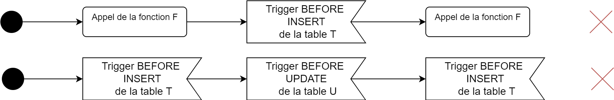

Base de données 1
Chapitre 5 - Automatisation des traitements et procédures stockées
Base de données 1 420-2B4-VI Hiver 2022 Durée approximative : 30 heures — 15 périodes
Contenu
- Coder avec MySQL
- Déclencheurs
- Lire la documentation
- Procédures stockées, transactions et gestions des erreurs
- REGEX avancées
- Allez plus loin avec les sous-requêtes
- Les BD Games, 2e édition
Coder avec MySQL
- Déclaration de variables
- Instruction conditionnelles
- Boucles
- Déclaration de fonctions
Variables
On retrouve 2 types de variables en MySQL : - Variables globales - Variables locales
Les variables globales sont accessibles partout, mais elles doivent être redéclarer à chaque exécution.
Lorsqu'on peut utiliser une variable locale, on le fait !.
Variables globales
Pour déclarer ou modifier une variable globale on utilise l’instruction
SET @variable = valeur
Les valeurs possibles dans une variables sont : Integer, decimal, float, blob, text
Toute autre type est converti dans un de ces types.
Afficher une variable
On utilise l’instruction SELECT pour afficher une variable.
SET @nombre = 12;
SELECT @nombre;
Le résultat est :
| @nombre |
-----------
| 12 |
Variables locales
Elles doivent être utilisées dans un bloc BEGIN ... END
DECLARE nom TYPE DEFAULT valeur;
Par exemple
DECLARE _nombre INTEGER DEFAULT 12;
Le DEFAULT valeur peut être omis pour ne pas affecter de valeurs lors de la déclaration. On les modifie également en utilisant l’instruction SET ou un SELECT.
Variables locales
Toutes les instructions DECLARE doivent être au début du bloc BEGIN.
Pour reconnaître les variables locales des colonnes, toutes les variables locales doivent être préfixées de (standard de code)
Opérations
Les opérations arithmétiques et de comparaison sont permises dans les membres de droite des assignations.
On peut également utiliser les variables dans les requêtes.
SELECT nom FROM Etudiant
WHERE code_etudiant = @code;
Instruction conditionnelle
L’instruction conditionnelle de base à la syntaxe suivante
IF condition THEN
traitements…
END IF;
Pas d’accolade { }, elles sont remplacées par THEN … END IF;
Par exemple, on vérifie que l'âge est plus grande ou égale à 18 (le code ne fonctionne pas, on ne peut pas mettre d'instructions conditionnelles hors d'une fonction en SQL).
IF @age >= 18 THEN
SELECT 'Vous etes majeur';
END IF;
Traitements alternatifs
IF condition THEN
traitement
ELSEIF condition alternative THEN
traitement
ELSE
traitement
END IF;
Instruction par cas
Semblable à l’instruction switch
CASE
WHEN condition THEN traitement
WHEN condition THEN traitement
ELSE traitement
END
La première condition validée est exécutée, puis le CASE est conclut (pas de break et pas de possibilité d'effectuer plusieurs traitements).
Exemple de CASE
L'exemple est un peu avancé, retenez l'élément suivant : on peut utiliser le CASE directement dans un SELECT
SELECT
CASE
WHEN nb_echecs = 0 THEN 'Pas d'echec'
WHEN nb_echecs <= 2 THEN '2 echecs ou moins'
ELSE ' Plus de deux echecs'
END
FROM ...
Instructions répétées
Boucle while qui exécute un traitement tant que la condition est vérifiée.
WHILE condition DO
traitements…
END WHILE;
Instructions répétées
Boucle qui effectue au moins une fois le traitement.
REPEAT
traitements…
UNTIL condition
END REPEAT;
Semblable à la boucle do-while.
Déclarer une fonction
Qu'est-ce qu'une fonction ? * Traitement regroupé dans une structure. Peut accepter des valeurs et les transformer pour retourner un résultat.
Particularité en SQL : * Le type de retour VOID n'existe pas. Toutes les fonctions retournent un résultat.
Types de fonction
Plusieurs types de caractéristiques de fonctions existent dans MySQL. On en distingue principalement 2 : - Caractère déterministe - Contenu de la fonction (Type de requête qu'elle contient)
Caractère déterministe
Indique si la valeur de retour est déterminée seulement selon les paramètres ou non.
2 valeurs possibles : - DETERMINISTIC - NOT DETERMINISTIC (NOW, RAND...)
Contenu
4 valeurs représentent le contenu d’une fonction :
NO SQL : ne contient pas d’instruction SQL CONTAINS SQL : contient des instructions SQL READS SQL DATA : contient une opération SELECT MODIFIES SQL DATA : contient une opération INSERT, UPDATE ou DELETE
On indique toujours une seule caractéristique de contenu. (MODIFIES implique READS).
Exigence minimale
Dans vos fonctions, vous devez préciser explicitement au moins une caractéristique de déterministe ou de contenu.
Pour le cours, il faut préciser les deux caractéristiques en tout temps
Par défaut : Déterminisme : NOT DETERMINISTIC Valeur : CONTAINS SQL
Vous pouvez en préciser une de chaque type.
Cas des fonctions non déterministe
ERREUR 1418 : This function has none of DETERMINISTIC, NO SQL, or READS SQL DATA in its declaration and binary logging is enabled (you might want to use the less safe log_bin_trust_function_creators variable).
Pour éviter cette erreur, on peut exécuter la ligne suivante AVANT de créer la fonction :
SET GLOBAL log_bin_trust_function_creators = 1;
Référence : https://stackoverflow.com/questions/26015160/deterministic-no-sql-or-reads-sql-data-in-its-declaration-and-binary-logging-i
Déclarer une fonction
DELIMITER $$
CREATE FUNCTION nom_fonction() RETURNS TYPE CARACTERISTIQUE_1 CARACTERISTIQUE_2
BEGIN
...
RETURN VALEUR;
END $$
DELIMITER ;
Exemple de fonction
Fonction qui retourne le nombre d’enregistrements de la table Étudiant.
DELIMITER $$
CREATE FUNCTION nombre_etudiants() RETURNS INTEGER NOT DETERMINISTIC READS SQL DATA
BEGIN
DECLARE _nombre INT;
SET _nombre = (SELECT count(*) FROM Etudiant);
RETURN _nombre;
END $$
DELIMITER ;
Pour exécuter la fonction
SELECT nombre_etudiants();
Ajoutez des paramètres
On précise les paramètres entre les parenthèses en utilisant la syntaxe
nom_parametre TYPE
Exemple de fonction
La fonction ajoute 1 à son argument.
DELIMITER $$
CREATE FUNCTION plus_un(_nombre INTEGER) RETURNS INTEGER DETERMINISTIC CONTAINS SQL
BEGIN
RETURN _nombre + 1;
END $$
DELIMITER ;
Supprimer une fonction
L’instruction pour retirer une fonction est :
DROP FUNCTION nom_fonction;
Documenter une fonction
Pour documenter une fonction, on utilise un commentaire de style JavaDOC
/**
* Description de la fonction
*
* @param _nom_parametre Description
* @param _nom_parametre Description
* @return Description de la valeur retournée
*/
Exercice 5-1
A. Faites la somme de deux entiers et retournez le résultat. B. Calculer la factorielle d’un entier. Rappel : 6! = 6 x 5 x 4 x 3 x 2 x 1 x 1 0! = 1
Suite page suivante
Exercice 5-1
C. Retournez le nombre d’étudiants inscrit dans un groupe dont vous connaissez la session (semestre et annee), le cours (sigle) et le numéro du groupe. Effectuez cet exerice de deux façons : sans utiliser de jointure et en utilisant des jointures. Paramètres : semestre, annee, sigle, numero_groupe
Exemples d'exécution
| Semestre | Annee | Sigle | Numéro de groupe | Nombre d'étudiants |
|---|---|---|---|---|
| Automne | 2020 | 420-1D6-VI | 1 | 3 |
| Automne | 2021 | 420-1D6-VI | 1 | 2 |
Déclencheur
- Syntaxe
- Exercices
- Combinaison avec fonction
- Exercice
Déclencheurs
Comment résoudre les situations suivantes :
- Si l’on essaie d’ajouter une note plus grande que la note maximale d’évaluation, alors on affecte la note maximale
- Après la création d'une Evaluation, on crée un ligne de EvaluationEtudiant pour chaque étudiant du groupe
- Si l'on supprime une EvaluationEtudiant, alors on supprime le document associé (sens inverse du ON CASCADE)
Déclencheurs
Un déclencheur (appelé communément Trigger) permet d’effectuer un traitement immédiatement avant ou après une opération :
- INSERT
- UPDATE
- DELETE
Syntaxe des déclencheurs
DELIMITER $$
CREATE TRIGGER nom TEMPS EVENEMENT ON Table FOR EACH ROW
BEGIN
traitement
END; $$
DELIMITER ;
TEMPS : BEFORE ou AFTER
EVENEMENT : INSERT, UPDATE ou DELETE
Choisir BEFORE ou AFTER
BEFORE : Quand il faut changer une valeur à insérer ou à modifier.
AFTER : Quand on veut s’assurer que la donnée soit bien insérée avant de faire le traitement (ex. n’a pas déclenché un check erroné).
Accéder à l'enregistrement modifié
On peut utiliser les références OLD et NEW pour accéder à l'enregistrement qui fait l'objet d'un déclencheur.
| Type de requête | OLD | NEW |
|---|---|---|
| INSERT | NULL | L'enregistrement inséré |
| UPDATE | L'enregistrement avant la modification | L'enregistrement après la modification |
| DELETE | L'enregistrement supprimé | NULL |
Exemple
Si l’on essaie d’ajouter une note plus grande que la note maximale d’évaluation, alors on affecte la note maximale
DELIMITER $$
CREATE TRIGGER respect_note_maximale BEFORE INSERT ON Evaluation_etudiant FOR EACH ROW
BEGIN
DECLARE _note_maximale INTEGER;
SET _note_maximale = (
SELECT ponderation FROM Evaluation
WHERE id_evaluation = NEW.id_evaluation
);
IF NEW.note > _note_maximale THEN
SET NEW.note = _note_maximale;
END IF;
END $$
DELIMITER ;
Documenter un déclencheur
Pour documenter un déclencheur, on utilise un commentaire de style JavaDOC
/**
* Description du TRIGGER
*
* @dependencies Table_dependante, table_dependante...
*/
Démonstration
Si la date de passation d'une nouvelle évaluation est hors de la durée de la session, alors on lui affecte la valeur nulle.
Exercice 5-2
Ajoutez les déclencheurs permettant d'effectuer les traitements suivants
A. Lorsqu'on supprime un enseignant, tous les programmes dont il est responsable sont modifiés pour que le responsable soit NULL (enlever la contrainte NOT NULL sur la colonne responsable) B. À la suppression d'une EvaluationEtudiant, alors on supprime le document associé (sens inverse du ON CASCADE)
Conflits et limitations des déclencheurs et des fonctions
Les cas de figure suivant sont interdits : - Une fonction ne peut pas s'appeler elle-même - Un déclencheur ne peut pas être appelé sur une table en modification par un déclencheur
Un déclencheur peut appeler une fonction et l'exécution d'une fonction pourrait activer un déclencheur.
Les appels implicits sont aussi interdits !
Exemple de schémas d'exécution à problème

Déclencheurs sur la même table
Appeler un déclencheur BEFORE et un AFTER sur la même table.
- La table est verrouillée, le déclencheur BEFORE s'exécute, la table est libérée
- La requête s'exécute
- La table est verrouillée, le déclencheur AFTER s'exécute, la table est libérée
Donc une table peut définir jusqu'à 6 déclencheurs.
Démonstration
Si la date de passation d'une évaluation est hors de la durée de la session, alors on lui affecte la valeur nulle.
Gérez cette validation pour l'insertion et la modification.
Exercice 5-3
C. Si l'évaluation ajoutée cause la somme des pondérations du cours à excéder 100%, alors la pondération devient 0. Gérez cette validation lors de l'ajout et de la modification.
Lire la documentation
| Symbole | Signification |
|---|---|
| [ ] | Indique un élément optionnel |
| … | Ellipse (permet de répéter un élément) |
| MAJUSCULES | Mot-clé du langage |
| Italique | Terme définit plus loin |
| | | OU |
| { } | Un dans la liste est obligatoire |
Le texte contient des informations importantes sur ce qui est permis et le résultat des opérations.
Procédures stockées
- Syntaxe
- Exercices
- Gestion des erreurs et des transactions
- Exercices
Procédures stockées
Les procédures stockées sont semblables aux fonctions. Elles permettent de préparer des traitements (comme des fonctions) et de les exécuter. À la différence des fonctions les procédures stockées :
- Peuvent ne pas retourner de valeur
- Peuvent s'appeller elle-même
- Les fonctions ne peuvent pas appeler de procédures, mais les procédures peuvent appeler des fonctions
Utilisation des procédures et des fonctions
Les procédures gèrent généralement la logique applicative (couche métier). Par exemple, les ajouts ou modifications aux données.
Les fonctions définissent généralement un traitement d’appoint, un calcul ou l'obtention d'un renseignement.
Déclarer et invoquer une procédure
DELIMITER $$
CREATE PROCEDURE nom_procedure()
BEGIN
traitement
END $$
DELIMITER ;
Pour invoquer une procédure, on utilise l'instruction CALL.
CALL nom_procedure();
Paramètres de procédure
Les paramètres d'une procédure peuvent prendre 3 formes :
- IN : paramètre d'entrée, donc en lecture seule
- OUT : paramètre de sortie, donc en écriture puis en lecture au besoin
- INOUT : paramètre d'entrée et de sortie (ref). En lecture et en écriture.
On inscrit des variables dans les paramètres OUT pour récupérer les valeurs. Si la variable contient déjà une valeur, il n'est pas possible de la récupérer dans la procédure.
Exemple
DELIMITER $$
CREATE PROCEDURE somme (IN _operande1 INT, IN _operande2 INT, OUT _resultat INT)
BEGIN
SET _resultat = _operande1 + _operande2;
END $$
DELIMITER ;
On remarque ici : - L'absence d'instruction RETURN (interdit dans une procédure) - L'utilisation du OUT pour résultat
Invocation de procédure
SET @resultat = 0; -- Déclaration d'une variable
CALL somme(2, 4, @resultat); -- Invocation
SELECT @resultat; -- Affichage
Documenter une procédure
Chaque procédure s'accompagne d'une documentation d'en-tête
/**
* Description de la procédure
*
* @param IN | OUT | INOUT Nom du paramètre Description
* @param IN | OUT | INOUT Nom du paramètre Description
* ...
*/
Comme les procédures peuvent devenir très longues, il est important d'utiliser des commentaires pour les variables locales déclarées et certaines instructions (IF, WHILE, REPEAT ...)
Exercice 5-4
A. Créez une procédure pour ajouter un nouveau groupe. Initialement l'enseignant est null. Vous connaissez seulement le semestre, l'année et le sigle du cours. Vous devez ajouter le numéro de groupe suivant (si le groupe 1 et 2 existent, alors le groupe aura le numéro 3). Le premier groupe porte le numéro 1. La procédure retourne le numéro du groupe qui a été créé. En cas d'erreur, le numéro -1 est retourné.
Paramètres : semestre, annee et sigle du cours Valeur de retour : le numéro du groupe qui a été créé
B. Créez une procédure pour inscrire un étudiant à un cours. La procédure reçoit le code de l'étudiant, le sigle du cours, le semestre et l'année pour l'inscription.
L'étudiant est toujours ajouté au groupe avec le plus petit numéro qui a une place de libre. Si le groupe est plein (4 étudiants et plus), alors un nouveau groupe est créé.
Le numéro du groupe dans lequel l'élève a été inscrit est retourné. En cas d'erreur, la valeur -1 est retournée.
Paramètres : code étudiant, sigle du cours, semestre, année Valeur de retour : numéro du groupe dans lequel l'inscription s'est faite
Transactions et gestion d'erreur
Concept d'exception en programmation Principe d’une transaction
Exceptions en programmation

Quand gérer les exceptions
- Quand une erreur de fonctionnement imprévisible est à risque de survenir :
- Donnée utilisateur
- Référence à un programme externe
- Référence à des données non contrôlées
- Gérer certaines scénarios d'exécution problématiques
Exceptions possibles en BD
Les exceptions possibles dans le domaine de la BD sont :
- Violation de contrainte
- Duplicat de clé primaire
- Duplicat de valeur unique
- Insérer NULL dans une colonne qui n'est pas nullifiable
- Ne pas respecter un contrainte CHECK
- Ne pas respecter une clé étrangère
- Exception personnalisées
Codes d'erreur MySQL
Les codes d'erreur de MySQL sont gérés par les SQLSTATE. Les états SQL sont des codes à 5 chiffres. Les 2 premiers indiquent un état global (erreur, avertissement, succès, information...) et les 3 derniers sont spécifiques à la situation
- 00### : indique un succès
- 01### : avertissement
- 02### : non trouvé
- >02### : exception
Lancer un signal
Le SGBD lance des sigaux lorsqu'une erreur interne se produit. Il est possible de lancer un signal avec un code d'erreur personnalisé.
SIGNAL SQLSTATE 'code 5 chiffres' SET MESSAGE_TEXT = 'Message erreur';
Gestion des signaux et des transactions
Pour attraper un signal, on déclare un gestionnaire (handler).
DECLARE action HANDLER FOR condition | code
L'action est de deux types : - CONTINUE : le bloc BEGIN - END continue son exécution après la gestion du signal - EXIT : le bloc BEGIN - END arrête son exécution après la gestion du signal.
Les gestionnaires peuvent seulement être déclarés dans les procédures.
Condition du gestionnaire
La condition peut être de différents types. - Une classe de signaux : - SQLWARNING - NOT FOUND - SQLEXCEPTION - Un code particulier : - Code d'erreur MySQL (4 chiffres) : https://dev.mysql.com/doc/mysql-errors/8.0/en/server-error-reference.html - Un code de signal SQLSIGNAL code5 - Le nom d'une condition (DECLARE ... CONDITION)
Exemple
Attraper les erreurs de clé primaire nulle
DECLARE EXIT HANDLER FOR 1171
-- Alternative
DECLARE EXIT HANDLER FOR 42000
Attraper toutes les exceptions
DECLARE EXIT HANDLER FOR SQLEXCEPTION
Afficher l'erreur
On récupère l'erreur avec une requête
GET DIAGNOSTICS
Par exemple pour récupérer le code et le message d'erreur actuel
GET DIAGNOSTICS CONDITION 1
_code = RETURNED_SQLSTATE,
_message = MESSAGE_TEXT;
SELECT _code, _message;
où _code et _message sont des variables locales
Exemple complet de gestion d'exception
CREATE PROCEDURE gestion_erreur()
BEGIN
DECLARE _code CHAR(5);
DECLARE _message TEXT;
...
-- On répère ce bloc pour chaque type d'erreur à traiter
DECLARE EXIT HANDLER FOR 00000
BEGIN
GET DIAGNOSTICS CONDITION 1
_code = RETURNED_SQLSTATE,
_message = MESSAGE_TEXT;
SELECT _code, _message;
END;
...
Transactions - Mise en situation
Timmy, dévoué programmeur, crée un script qui importe, dans notre système École, les notes de tous les étudiants à une évaluation . Afin d'éviter d'insérer de mauvaises données, Timmy applique la règle suivante : si une des notes ne peut pas être ajoutée (par exemple pour une violation de contrainte), alors aucune note n'est ajoutée.
Si notre script s’exécute automatiquement, comment appliquer cette mesure ?
Principe d’une transaction
Une transaction contient une série d’instructions. Une fois que toutes les instructions ont été effectuées, on peut les enregistrer ou les annuler.
L’utilisation de transaction facilite l’exécution d’instructions multiples et aide à maintenir une intégrité dans nos données.
Fonctionnement d'une transaction
- On commence pas indiquer notre intention de faire un bloc d'instructions (transaction) par START TRANSACTION
- On effectue les requêtes
- On COMMIT la transaction si tout s'est bien déroulé OU on ROLLBACK si on veut tout annuler.
Exemple
Ajoutez la contrainte suivante à la table Evaluation_etudiant
CONSTRAINT interval_note CHECK (note BETWEEN 0 AND 100)
Désactivons le autocommit de MySQL Workbench

Exemple
Ajoutons les données suivantes
INSERT INTO Evaluation_etudiant (id_evaluation, etudiant, note, document) VALUES
(1, 1234567, 22, NULL);
INSERT INTO Evaluation_etudiant (id_evaluation, etudiant, note, document) VALUES
(1, 4567890, -5, NULL);
INSERT INTO Evaluation_etudiant (id_evaluation, etudiant, note, document) VALUES
(1, 8901234, 24, NULL);
Comment revenir supprimer le premier enregistrement qui s'est bien déroulé ?
Exemple de ROLLBACK
SELECT count(id_evaluation) FROM Evaluation_etudiant; -- Affiche 75
START TRANSACTION;
INSERT INTO Evaluation_etudiant (id_evaluation, etudiant, note, document) VALUES
(1, 1234567, 22, NULL);
INSERT INTO Evaluation_etudiant (id_evaluation, etudiant, note, document) VALUES
(1, 4567890, -5, NULL);
INSERT INTO Evaluation_etudiant (id_evaluation, etudiant, note, document) VALUES
(1, 8901234, 24, NULL);
SELECT count(id_evaluation) FROM Evaluation_etudiant; -- Affiche 77 (+2)
ROLLBACK; -- Il y a eu erreur
SELECT count(id_evaluation) FROM Evaluation_etudiant; -- Affiche 75
Exemple de commit
Les INSERT sont valides cette fois-ci.
SELECT count(id_evaluation) FROM Evaluation_etudiant; -- Affiche 75
START TRANSACTION;
INSERT INTO Evaluation_etudiant (id_evaluation, etudiant, note, document) VALUES
(1, 1234567, 22, NULL);
INSERT INTO Evaluation_etudiant (id_evaluation, etudiant, note, document) VALUES
(1, 4567890, 17, NULL);
INSERT INTO Evaluation_etudiant (id_evaluation, etudiant, note, document) VALUES
(1, 8901234, 24, NULL);
SELECT count(id_evaluation) FROM Evaluation_etudiant; -- Affiche 78 (+3)
COMMIT; -- Tout s'est bien déroulé
SELECT count(id_evaluation) FROM Evaluation_etudiant; -- Affiche 78
Démonstration
Créez une procédure pour inscire un nouveau vol. La procédure reçoit une immatriculation de viasseau, le numéro de vol et le nom du capitaine du vol.
La procédure crée le vol et ajoute un membre d'équipage, le capitaine. En cas d'erreur, aucune donnée ne doit être créée.
Exercice 5-5
A. Créez une procédure pour noter un étudiant. Cette procédure doit accepter un code étudiant, l'id de groupe (que l'on suppose avoir obtenu par un autre moyen) et le nom de l'évaluation.
Supposez que l'id du groupe et le nom de l'évaluation forme une clé unique.
Gérez l'erreur qui pourrait survenir si l'évaluation n'existe pas.
Votre procédure doit permettre d'assigner une note que Evaluation_etudiant existe ou non au préalable.
Paramètres : code_etudiant, id_groupe, nom_evaluation et note.
Suite diapositive suivante
B. Créez une procédure pour permettre à un étudiant de déposer un travail. La procédure doit accepter un code etudiant, un id_evaluation (que l'on suppose avoir obtenu par un autre moyen) et les informations relative au document. On suppose que Evaluation_etudiant a déjà été créé pour l'évaluation et l'étudiant donné.
Si un document a déjà été déposé, alors : - Mettez à jour l'information du document - Déclencher un avertissement de code 01001 qui ne bloque pas l'exécution de la procédure
Paramètres : code_etudiant, id_evaluation et le titre du document
Suite diapositive suivante
C. Vous devez ajouter 3 nouveaux enseignants dans le système École. Voici les données de ceux-ci.
Effectuez l'opération en utilisant les transactions. Si l'un d'entre eux ne peut pas être ajouté, alors aucune ne doit l'être.
| Code employé | Nom | No assurance sociale | Ancienneté |
|---|---|---|---|
| 7645 | Diana de Themyscira | 111 222 333 | 15 |
| 7654 | Jason Todd | 987 654 321 | 1 |
| 6574 | Barry Allen | 555 777 333 | 8 |